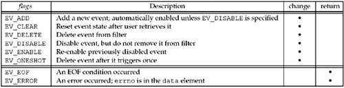
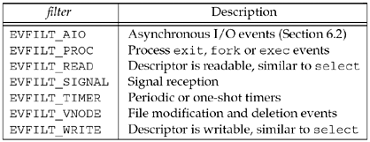

| [ Team LiB ] |
|
14.9 Advanced PollingEarlier in this chapter, we discussed several ways to set a time limit on a socket operation. Many operating systems now offer another alternative, and provide the features of select and poll we described in Chapter 6 as well. Since none of these methods have been adopted by POSIX yet, and each implementation seems to be slightly different, code that uses these mechanisms should be considered nonportable. We'll describe two mechanisms here; other available mechanisms are similar. /dev/poll InterfaceSolaris provides a special file called /dev/poll, which provides a more scalable way to poll large numbers of file descriptors. The problem with select and poll is that the file descriptors of interest must be passed in with each call. The poll device maintains state between calls so that a program can set up the list of descriptors to poll and then loop, waiting for events, without setting up the list again each time around the loop. After opening /dev/poll, the polling program must initialize an array of pollfd structures (the same structure used by the poll function, but the revents field is unused in this case). The array is then passed to the kernel by calling write to write the structured directly to the /dev/poll device. The program then uses an ioctl call, DO_POLL, to block, waiting for events. The following structure is passed into the ioctl call:
struct dvpoll {
struct pollfd* dp_fds;
int dp_nfds;
int dp_timeout;
}
The field dp_fds points to a buffer that is used to hold an array of pollfd structures returned from the ioctl call. The field dp_nfds field specifies the size of the buffer. The ioctl call blocks until there are interesting events on any of the polled file descriptors, or until dp_timeout milliseconds have passed. Using a value of zero for dp_timeout will cause the ioctl to return immediately, which provides a nonblocking way to use this interface. Passing in -1 for the timeout indicates that no timeout is desired. We modify our str_cli function, which used select in Figure 6.13, to use /dev/poll in Figure 14.15. Figure 14.15 str_cli function using /dev/poll.advio/str_cli_poll03.c
1 #include "unp.h"
2 #include <sys/devpoll.h>
3 void
4 str_cli(FILE *fp, int sockfd)
5 {
6 int stdineof;
7 char buf[MAXLINE];
8 int n;
9 int wfd;
10 struct pollfd pollfd[2];
11 struct dvpoll dopoll;
12 int i;
13 int result;
14 wfd = Open("/dev/poll", O_RDWR, 0);
15 pollfd[0].fd = fileno(fp);
16 pollfd[0].events = POLLIN;
17 pollfd[0].revents = 0;
18 pollfd[1].fd = sockfd;
19 pollfd[1].events = POLLIN;
20 pollfd[1].revents = 0;
21 Write(wfd, pollfd, sizeof(struct pollfd) * 2);
22 stdineof = 0;
23 for ( ; ; ) {
24 /* block until /dev/poll says something is ready */
25 dopoll.dp_timeout = -1;
26 dopoll.dp_nfds = 2;
27 dopoll.dp_fds = pollfd;
28 result = Ioctl(wfd, DP_POLL, &dopoll);
29 /* loop through ready file descriptors */
30 for (i = 0; i < result; i++) {
31 if (dopoll.dp_fds[i].fd == sockfd) {
32 /* socket is readable */
33 if ( (n = Read(sockfd, buf, MAXLINE)) == 0) {
34 if (stdineof == 1)
35 return; /* normal termination */
36 else
37 err_quit("str_cli: server terminated prematurely");
38 }
39 Write(fileno(stdout), buf, n);
40 } else {
41 /* input is readable */
42 if ( (n = Read(fileno(fp), buf, MAXLINE)) == 0) {
43 stdineof = 1;
44 Shutdown(sockfd, SHUT_WR); /* send FIN */
45 continue;
46 }
47 Writen(sockfd, buf, n);
48 }
49 }
50 }
51 }
List descriptors for /dev/poll14–21 After filling in an array of pollfd structures, we pass them to /dev/poll. Our example only requires two file descriptors, so we use a static array of structures. In practice, programs that use /dev/poll need to monitor hundreds or even thousands of file descriptors, so the array would likely be allocated dynamically. Wait for work24–28 Rather than calling select, this program blocks, waiting for work, in the ioctl call. The return is the number of file descriptors that are ready. Loop through descriptors30–49 The code in our example is simplified since we know the ready file descriptors will be sockfd, the input file descriptor, or both. In a large-scale program, this loop would be more complex, perhaps even dispatching the work to threads. kqueue InterfaceFreeBSD introduced the kqueue interface in FreeBSD version 4.1. This interface allows a process to register an "event filter" that describes the kqueue events it is interested in. Events include file I/O and timeouts like select, but also adds asynchronous I/O, file modification notification (e.g., notification when a file is removed or modified), process tracking (e.g., notification when a given process exits or calls fork), and signal handling. The kqueue interface includes the following two functions and macro:
The kqueue function returns a new kqueue descriptor, which can be used with future calls to kevent. The kevent function is used to both register events of interest and determine if any events have occurred. The changelist and nchanges parameters describe the changes to be made to the events of interest, or are NULL and 0, respectively, if no changes are to be made. If nchanges is nonzero, each event filter change requested in the changelist array is performed. Any filters whose conditions have triggered, including those that may have just been added in the changelist, are returned through the eventlist parameter, which points to an array of nevents struct kevents. The kevent function returns the number of events that are returned, or zero if a timeout has occurred. The timeout argument holds the timeout, which is handled just like select: NULL to block, a nonzero timespec to specify an explicit timeout, and a zero timespec to perform a nonblocking check for events. Note that the timeout parameter is a struct timespec, which is different from select's struct timeval in that it has nanosecond instead of microsecond resolution. The kevent structure is defined by including the <sys/event.h> header.
struct kevent {
uintptr_t ident; /* identifier (e.g., file descriptor) */
short filter; /* filter type (e.g., EVFILT_READ) */
u_short flags; /* action flags (e.g., EV_ADD) */
u_int fflags; /* filter-specific flags */
intptr_t data; /* filter-specific data */
void *udata; /* opaque user data */
};
The actions for changing a filter and the flag return values are shown in Figure 14.16. Figure 14.16. flags for kevent operations. Filter types are shown in Figure 14.17. Figure 14.17. filters for kevent operations. We modify our str_cli function, which used select in Figure 6.13, to use kqueue in Figure 14.18. Determine if file pointer points to a file10–11 The behavior of kqueue on EOF is different depending on whether the file descriptor is associated with a file, a pipe, or a terminal, so we use the fstat call to determine if it is a file. We will use this determination later. Set up kevent structures for kqueue12–13 We use the EV_SET macro to set up two kevent structures; both specify a read filter (EVFILT_READ) and request to add this event to the filter (EV_ADD). Create kqueue and add filters14–16 We call kqueue to get a kqueue descriptor, set the timeout to zero to allow a nonblocking call to kevent, and call kevent with our array of kevents as the change request. Loop forever, blocking in kevent17–18 We loop forever, blocking in kevent. We pass a NULL change list, since we are only interested in the events we have already registered, and a NULL timeout to block forever. Loop through returned events19 We check each event that was returned and process it individually. Figure 14.18 str_cli function using kqueue.advio/str_cli_kqueue04.c
1 #include "unp.h"
2 void
3 str_cli(FILE *fp, int sockfd)
4 {
5 int kq, i, n, nev, stdineof = 0, isfile;
6 char buf[MAXLINE];
7 struct kevent kev[2];
8 struct timespec ts;
9 struct stat st;
10 isfile = ((fstat(fileno(fp), &st) == 0) &&
11 (st.st_mode & S_IFMT) == S_IFREG);
12 EV_SET(&kev[0], fileno(fp), EVFILT_READ, EV_ADD, 0, 0, NULL);
13 EV_SET(&kev[1], sockfd, EVFILT_READ, EV_ADD, 0, 0, NULL);
14 kq = Kqueue();
15 ts.tv_sec = ts.tv_nsec = 0;
16 Kevent(kq, kev, 2, NULL, 0, &ts);
17 for ( ; ; ) {
18 nev = Kevent(kq, NULL, 0, kev, 2, NULL);
19 for (i = 0; i < nev; i++) {
20 if (kev[i].ident == sockfd) { /* socket is readable */
21 if ( (n = Read(sockfd, buf, MAXLINE)) == 0) {
22 if (stdineof == 1)
23 return; /* normal termination */
24 else
25 err_quit("str_cli: server terminated prematurely");
26 }
27 Write(fileno(stdout), buf, n);
28 }
29 if (kev[i].ident == fileno(fp)) { /* input is readable */
30 n = Read(fileno(fp), buf, MAXLINE);
31 if (n > 0)
32 Writen(sockfd, buf, n);
33 if (n == 0 || (isfile && n == kev[i].data)) {
34 stdineof = 1;
35 Shutdown(sockfd, SHUT_WR); /* send FIN */
36 kev[i].flags = EV_DELETE;
37 Kevent(kq, &kev[i], 1, NULL, 0, &ts); /* remove kevent */
38 continue;
39 }
40 }
41 }
42 }
43 }
Socket is readable20–28 This code is exactly the same as in Figure 6.13. Input is readable29–40 This code is similar to Figure 6.13, but is structured slightly differently to handle how kqueue reports an EOF. On pipes and terminals, kqueue returns a readable indication that an EOF is pending, just like select. However, on files, kqueue simply returns the number of bytes left in the file in the data member of the struct kevent and assumes that the application will know when it reaches the end. Therefore, we restructure the loop to write the data to the network if a nonzero number of bytes were read. Next, we check our modified EOF condition: if we have read zero bytes or if it's a file and we've read as many bytes as are left in the file. The other modification from Figure 6.13 is that instead of using FD_CLR to remove the input descriptor from the file set, we set the flags to EV_DELETE and call kevent to remove this event from the filter in the kernel. SuggestionsCare should be taken with these newly evolved interfaces to read the documentation specific to the OS release. These interfaces often change in subtle ways between releases while the vendors work through the details of how they should work. While writing nonportable code is, in general, something to avoid, it is quite common to use any means possible to optimize a very heavily used network application for the specific server it runs on. |
| [ Team LiB ] |
|